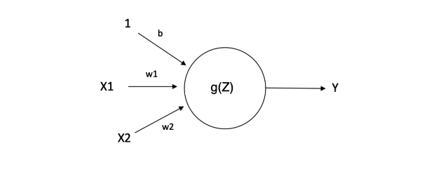

To improve the performance of our neural network, we mainly focus on these two aspects:
- Accuracy - That is very easy to understand. To make it more precise, we want to improve the test accuracy
- Speed - the big difference between normal ML algorithm and Neural Network is that DNN always needs long time to train the model. In that case, efficiency or running time is also a aspect to improve
I divided this topic into two blogs. The first blog talks about the basic data pre-processing methods and why it will work; Different ways to overcome the overfitting problem. The second blog will mainly focus on talking about different optimization methods.
1. Data Preprocessing
1.1 Data Normalization
Data normalization means normalize your data with same \(\mu\) and \(\sigma\), in most cases we will subtract the mean and divide its std for each feature. After normalization each feature will have \(\mu =0\) and \(\sigma =1\)
- Why we need it?: This course gives very good graph explanation:
It prevents the cost function to be an elongated bowl, which makes gradient descent inefficient
1.2 Weight Initialization
The necessity of weight initialization is due to the problem called Vanishing/Exploding Gradients
Suppose all initial weights of \(\omega > 1\), and we use a linear activation function, then the gradient will be larger and larger which makes it difficult to find the local minimum. Same cases if \(\omega < 1\), the gradient will become smaller and smaller and almost stop the weights update.
In that case we need to random initialize the weight (symmetry breaking). Normally, we will sample weight from standard normal distribution but with \(Var(\omega_i) = \frac{1}{m}\) where m is the number of features of last layer. Intuition here is that as the feature number increasing, we decrease the weights --> slight regularization
2. Regularization
Bias and Variance trade-off in DNN is much less than normal ML. In a word, we always reduce bias without hurting variance by using bigger network.
2.1 Regularization
Just like normal ML algorithm, we can have L1 or L2 regularization to prevent overfitting. Intuition behind is to decay the weight that makes the network simple
\[J(\omega^{[1]},b^{[1]},...) = \frac{1}{m}\sum_{i=1}^{m}L(\hat{y^{i}},y^{I})+\frac{\lambda}{2m}\sum_{l=1}^{[l]}||\omega^{[l]}||^2_{2}\]
2.2 Dropout
The way dropout doing is to only keep a node active with some probability. In another word, everything training we will randomly throw out some neural. The common technique we used is called inverted dropout.
Inverted Dropout: what it does is not only randomly zero out some proportion units in a layer, but also try to keep the expectation value the same by doing scaling up: \[\frac{g(z^{[l]})}{p(dropout)}\] In that case dropout will not be used in the test time and the expectation value of each layer is the same with training time.
Intuition: The model cannot rely one any one feature since as the Gradient Descent goes, any feature may be dropped out ==> similar to shrink some weights to zero.
But the drawback is our cost function is changing every time.
Let's look at other ways to improve the NN in the next article.
Reference:
DeepLearning.ai
https://medium.com/learn-love-ai/the-curious-case-of-the-vanishing-exploding-gradient-bf58ec6822eb
http://cs231n.github.io/neural-networks-2/#reg